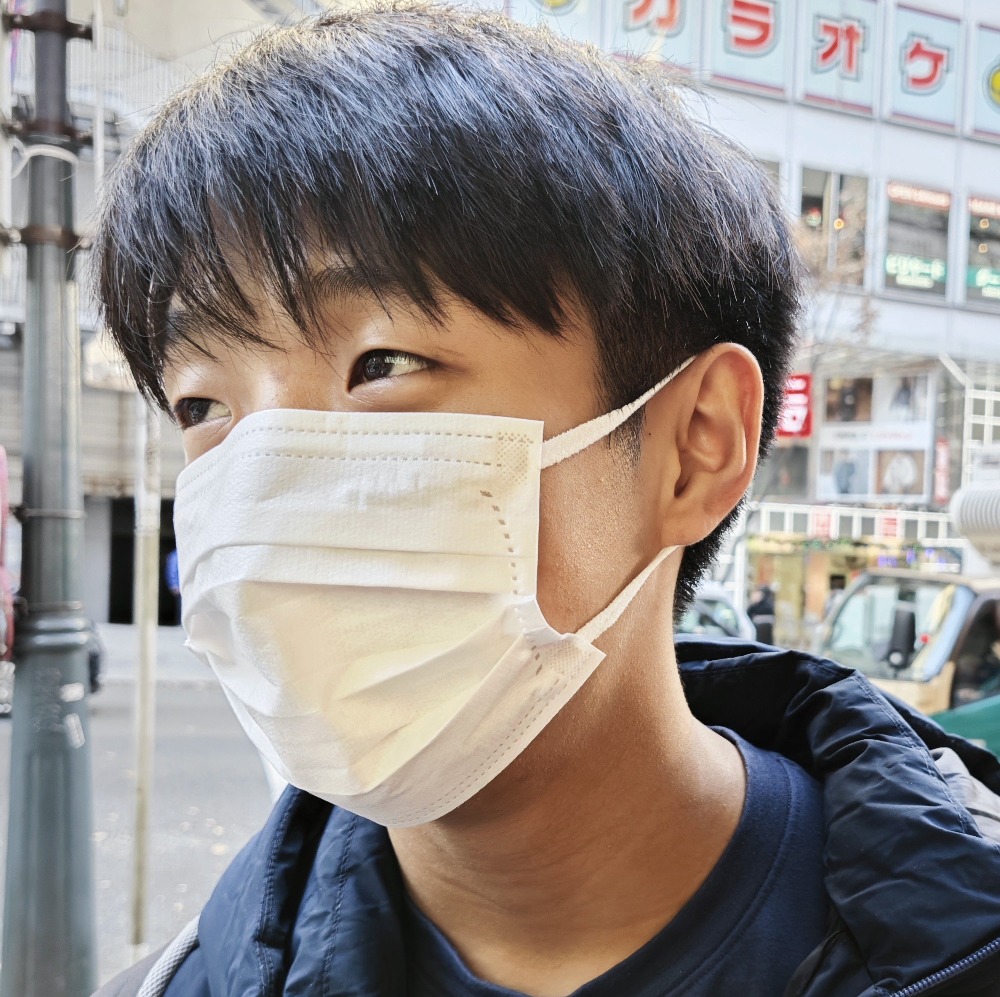

About Me

Hi, I am Lo Shao Kai from River Valley High School. I love physics and maths. During my free time I like to do one of three things: exercise, game or learn random things. Another fun fact about me is that I like travelling and spontaneousity, I enjoy company and exploring new things. Sometimes when I am bored I do coding projects like this portfolio site.
Projects
- SIMC — Singapore International Mathematics Challenge
Taught myself linear algebra to tackle a team modelling challenge, using matrix methods and code to analyse the data, then presented our approach and findings to an NUS professor.
Outcome: Awarded Merit (2026).
- SYPT — Singapore Young Physicist's Tournament
Planned a simulated sports competition as part of a mathematical modelling competition and incorporated coding to analyze results and support predictions.
Outcome: Gained hands-on experience in experimental physics and technical writing.
- IMMC — International Mathematical Modelling Competitions
Planned a simulated sports competition as part of a mathematical modelling competition and incorporated coding to analyze results and support predictions.
Outcome: Awarded Distinction (2025, 2026) for clear modelling and innovative approach.
Competitions
- 🏆 Singapore Junior Biology Olympiad Gold (2025)
- 🥈 Singapore Junior Physics Olympiad Bronze (2024), Silver (2025)
- 🥉 Singapore Junior Chemistry Olympiad Bronze (2025)
- 🥉 Singapore Math Olympiad (Senior) Bronze (2024, 2025)
- 🥉 Singapore Math Olympiad (Open) HM (2025), Bronze (2026)
- 🥈 Singapore International Mathematics Challenge Merit (2026)
- 🥉 NOI Participation (2025)
- 🥉 Singapore Young Physicist Tournament Bronze (2025)
- 🥈 International Space Challenge Merit (2025)
- 🏆 International Mathematical Modelling Competition Distinction (2025, 2026)
- 🥈 Illustratum: A Hallway Physics Competition Merit
- 🥉 Singapore Physics League Merit (2024), Bronze (2025)
- 🥉 Singapore Math Olympiad Bronze (2022)
- 🥈 NSG Wushu B Division 2nd (2025)
Interests
I am interested in mathematics and how it allows the world to work, especially in complicated real world context. I also enjoy studying how theoretical ideas can be translated into real world systems. Outside of academics, I like to exercise regularly to stay fit.